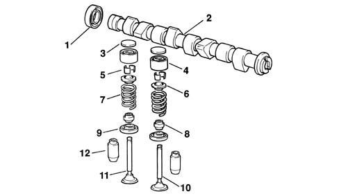
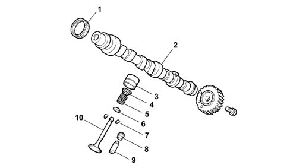
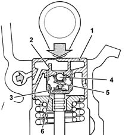
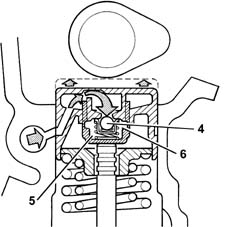

Introduction - TIMING SYSTEM
- Path
- Descriptions > 10 ENGINE > 1036 TIMING SYSTEM > Introduction - TIMING SYSTEM
- Kind
- system description
- Applies to
- all engines; all production periods
- Interactive page
- https://sloeber94.github.io/elrnDB-lYpsln/en/#/2429832
Applies to: engines: 1.2 8v; all production periods; only with equipment: Euro 3
A 'spheroid cast iron' overhead camshaft operated by a timing belt.
Applies to: engines: 1.2 16v; all production periods; only with equipment: Euro 3
Two cast iron camshafts, in a camshaft housing; driven by a belt and sprockets.
Applies to: engines: 1.4 16v; all production periods
Two cast iron camshafts, in a camshaft housing; driven by a belt and gears.
Applies to: engines: 1.2 8v; all production periods; only with equipment: Euro 3
There are the same number of suitably positioned cams as there are valves to operate; at the front, it is prepared for the fitting of the toothed pulley, through which the motion of the crankshaft is received, by means of a suitably tensioned belt (see 'repair procedures' section).

1, Camshaft oil seal 2, Camshaft 3, Tappet adjustment shim 4, Tapppet 5, Cotters 6, Upper shim 7, Spring 8, Oil seal 9, Lower shim 10, Inlet valve 11, Exhaust valve 12, Valve guide
Applies to: engines: 1.2 16v; all production periods; only with equipment: Euro 3
There are the same number of suitably positioned cams as there are valves to operate.
At the front, the exhaust shaft is prepared for the fitting of the toothed pulley, through which the movement of the crankshaft is received, by means of a suitably tensioned belt. (see 'Repair Procedures').
A pair of gears, fitted at the rear of the shafts, allows the transfer of the power from the exhaust shaft to the inlet shaft.

1, Camshaft oil seal 2, Camshaft 3, Tappet 4, Upper shim 5, Spring 6, Lower shim 7, Cotters 8, Oil seal 9, Valve guide 10, Valve
Applies to: engines: 1.4 16v; all production periods
There are the same number of suitably positioned cams as there are valves to operate.
At the front, the exhaust shaft is prepared for the fitting of the toothed pulley, through which the movement of the crankshaft is received, by means of a suitably tensioned belt. (see 'Repair Procedures').
A pair of gears, fitted at the rear of the shafts, allows the transfer of the power from the exhaust shaft to the inlet shaft.
1, Camshaft oil seal 2, Camshaft 3, Tappet 4, Upper shim 5, Spring 6, Lower shim 7, Cotters 8, Oil seal 9, Valve guide 10, Valve
Applies to: engines: 1.2 16v; all production periods; only with equipment: Euro 3
The hydraulic tappets, fitted on this version, automatically cancel the valve clearance during engine operation, with the advantage of reducing:
- maintenance operations
- engine noise.
Applies to: engines: 1.4 16v; all production periods
The hydraulic tappets, fitted on this version, automatically cancel the valve clearance during engine operation, with the advantage of reducing:
- maintenance operations
- engine noise.
Applies to: engines: 1.2 16v; all production periods; only with equipment: Euro 3
Operation in open stage
When the camshaft cam acts on the cup (1) and consequently the piston (2), the oil trapped in the chamber (6), because the ball valve (4) closes, transmits the movement of the piston (2) directly to the sleeve (3) and so to the valve. During this stage, because of the high pressure to which it is subjected, some of the oil in the chamber (6) leaks through the tiny gap between the piston (2) and sleeve (3).

Applies to: engines: 1.4 16v; all production periods
Operation in open stage
When the camshaft cam acts on the cup (1) and consequently the piston (2), the oil trapped in the chamber (6), because the ball valve (4) closes, transmits the movement of the piston (2) directly to the sleeve (3) and so to the valve. During this stage, because of the high pressure to which it is subjected, some of the oil in the chamber (6) leaks through the tiny gap between the piston (2) and sleeve (3).
Applies to: engines: 1.2 16v; all production periods; only with equipment: Euro 3
Operation in closed stage
While the valve is closed, so that the tappet, pushed by the action of the spring (5), follows the profile of the cam, a vacuum is created inside the chamber (6) which causes the ball valve (4) to open, allowing oil to enter. The oil entering the chamber (6) replaces the oil which leaked out previously while the valve was open.

Applies to: engines: 1.4 16v; all production periods
Operation in closed stage
While the valve is closed, so that the tappet, pushed by the action of the spring (5), follows the profile of the cam, a vacuum is created inside the chamber (6) which causes the ball valve (4) to open, allowing oil to enter. The oil entering the chamber (6) replaces the oil which leaked out previously while the valve was open.